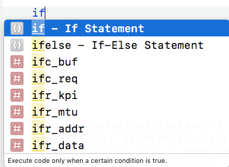
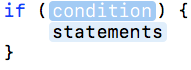
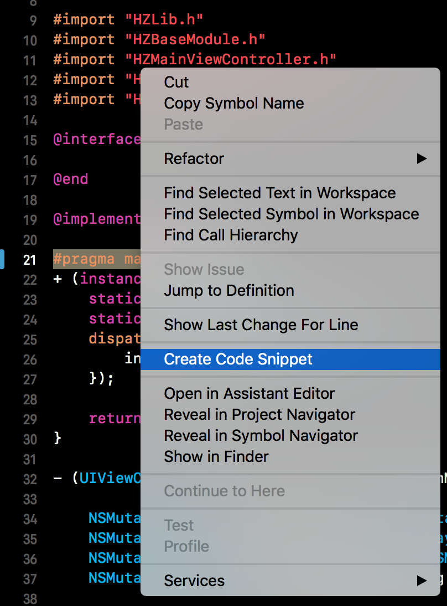
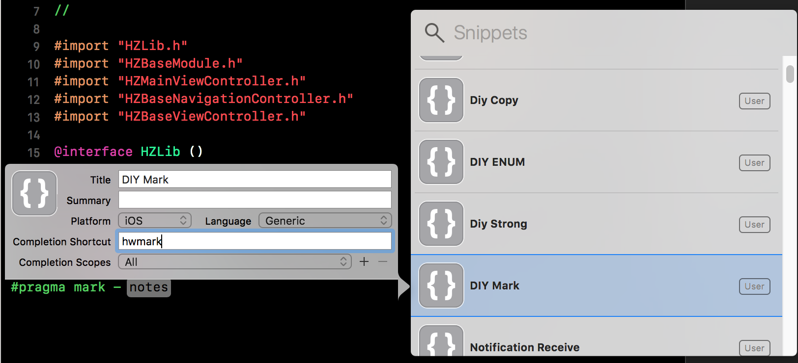
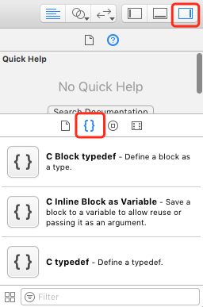
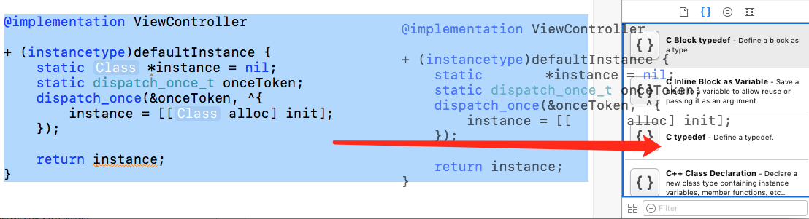
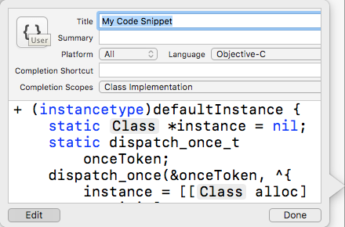

反馈请联系hertz@hertzwang.com,谢谢
持续更新中…
前方：之前在视频中看到，敲几个字母就能生成大段代码，大大提高了效率，于是就开始研究实现。
代码块效果展示
使用Xcode开发时，在方法内输入 if会出现提示，如图：

当然，这个是官方做的，输入 回车 后显示如图：

自定义块代码块
编写代码块
以单例代码块为例，首先写一段代码：
@implementation ViewController
+ (instancetype)defaultInstance {
static <#Class#> *instance = nil;
static dispatch_once_t onceToken;
dispatch_once(&onceToken, ^{
instance = [[<#Class#> alloc] init];
});
return instance;
}
注： 使用 <# 和 #> 来实现提示
存储代码块
Xcode 10
选中代码代码块，右击选择
Create Code Snippet
设置相关内容

Xcode 10 之前
打开Xcode中代码块位置

选中代码块，长按鼠标左键使光标变成黑色箭头，然后拖动至 Xcode中代码块位置

设置代码块
显示如图：

- Title 显示的标题
- Summary 概要描述信息
- Platform 平台，包括 All、iOS、macOS、tvOS、watchOS
- Language 语言，包括 Objective-C、Swift、Java、HTML 等
- Completion Shortcut 快捷键，输入的字符（如：
if），一般加上前缀与系统的分开，我用的是hw - Completion Scopes 代码块作用域，只有在设置的域中可用
设置完成后就可以使用啦
编辑代码块
打开Xcode中代码块位置，选中需要编辑的代码块等上几秒（也可以双击），点击 Edit 开发编辑
删除代码块
打开Xcode中代码块位置，选中需要删除的代码块，按钮键盘上的 delete 键
代码块本地存放路径
存放路径 ~/Library/Developer/Xcode/UserData/CodeSnippets，每一个.codesnippet文件都是一个代码块
Objective-C 常用代码块
属性
@property (nonatomic, assign) <#Object#> <#name#>;@property (nonatomic, strong) <#Object#> *<#name#>;@property (nonatomic, copy) <#Object#> *<#name#>;__weak typeof(self) weakSelf = self;
1 | if (weakSelf) { |
单例
1 | + (instancetype)defaultInstance { |
初始化UIWindow
1 | _window = [[UIWindow alloc] initWithFrame:[[UIScreen mainScreen] bounds]]; |
Mark
#pragma mark - <#Name#>
Unit Test
1 | /** |
Swift 常用代码块
Mark
//MARK: - <#Name#> Protocol Method
类方法
1 | class func <#name#>(<#parameters#>) -> <#return type#> { |